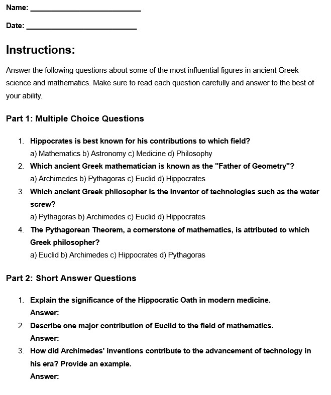

When it comes to designing assessments of student learning, it is very important to give every learner the opportunity to succeed. This means as an educator, you must ask questions in a multitude of different ways and assess students' learning in more than just one way. The artifact above displays a worksheet that I gave to my students, which assesses student understanding of content in three different ways. There is a multiple-choice section, a short-answer section, and a critical thinking section. Also, assessments in my class will vary from one to the next. While this artifact is a worksheet, some assignments might have students create a slideshow, some might have them create a poster, and some might just be a multiple-choice test at the end of a unit. Creating assessments such as these has allowed for so many different learners to show off their knowledge of content in a variety of ways.